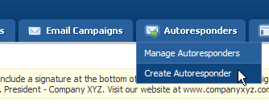
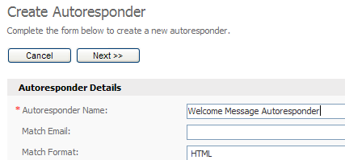

An autoresponder lets you send an email to your contacts a specific number of hours or days after they have subscribed to your contact list. For example, if John signs up to your contact list today, you can create an autoresponder to automatically send a welcome email to him 24 hours after he subscribes.
Autoresponders are often called the "marketer's dream tool", and in this article I'll show you how to setup a basic autoresponder to send an email to your contacts 24 hours after they join your contact list.
Important Note: You *must* have cron (the scheduled sending system) support enabled from the settings page in order to create and send your autoresponders, so make sure you check that before continuing. If cron isn't setup please contact your administrator and ask him/her to set it up for you.
To create an autoresponder, start by moving your mouse over the "Autoresponders" tab and clicking the "Create Autoresponder" menu option, like so:

To create an autoresponder, click the "Create Autoresponder" option under the "Autoresponders" tab.
The "Create Autoresponder" page will appear. Choose the contact list you want to create the autoresponder for and click the "Next >>" button. Complete the autoresponder details form. The only required field is a name for your autoresponder, which is used to identify the autoresponder in the control panel. This name is not shown to your users.
You can optionally filter the email addresses in your contact list using the other options on the form, but for our example we will send to everyone on the list. Click the "Next >>" button when you are done.

The only required field is the autoresponder's name field. All other fields are for filtering the contact list, so we can skip those for now.
When the page loads, complete the form. Pay particular attention to the "Bounce Email" and "Hours Delayed" fields. The "bounce email" field is the email address where emails rejected by your contacts mail servers will be sent. The "hours delayed" field tells the scheduling system how many hours after someone subscribes to your contact list to send them the autoresponder email. "0" means it will be sent straight away.
Optionally, complete the rest of the form. If you're unsure about any of the options just move your mouse over the help tip to learn more. Click the "Next >>" button to continue.
On this page you can create the content for your autoresponder email. Enter a subject in the subject field. This is the email subject line your contacts will see in their inbox. Enter the content of your newsletter in the editor too. Use the "Send Preview" option at the bottom of the page to send yourself a preview of the email before clicking the "Save And Exit" button.
Congratulations, you've just created your first autoresponder! Remember, you can create as many autoresponders for each contact list as you like, so why not get creative and use autoresponders to your advantage?
Bonus section: Ideas for autoresponders
So how might you use an autoresponder in your business? Here's a simple idea that's quick and easy to implement. In this example let's assume you sell poker chips online from your eCommerce website.
Create a new autoresponder that's sent 24 hours after someone subscribes to your newsletter. In it, include text and images describing your top selling poker chips and at the end include a link to "See all Top Selling Products at MyPokerChipsSite.com"
One week later schedule another autoresponder to your contacts. In it, include links to articles on your web site that teach them how to improve their poker/roulette/blackjack game. Nothing draws people back to your web site like free articles do.
Finally, create a new contact list and autoresponder to be sent out after 48 hours to those who order from you. Include your customer support details, including how they can contact you for help, a link to your knowledge base and any product warranty details they might want to know.
Of course this is just one example, but hopefully it's given you some new ideas as to how you can use autoresponders to improve your relationship with your web site visitors/customers.